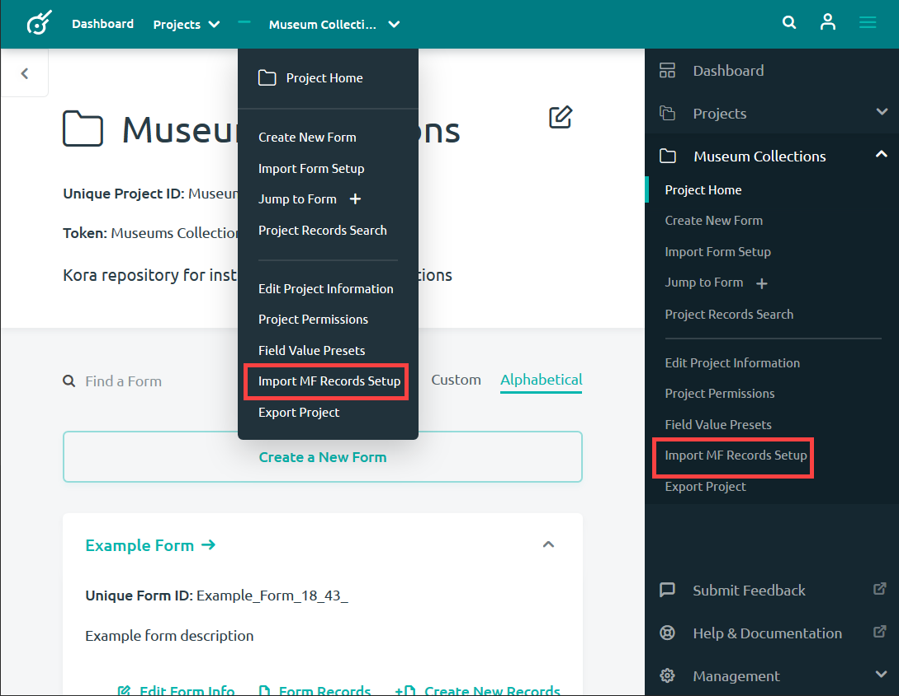
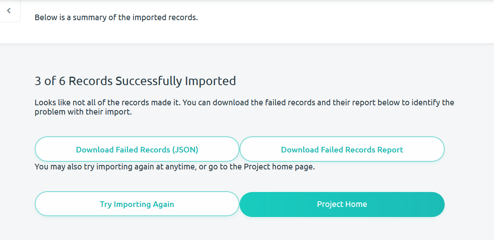

Importing Multi Form Records
If you have records that you want to import into multiple forms, Kora provides a way to import all of those records at once. Rather than performing multiple imports to submit records into different forms, you may perform one multiform record import. This will require formatting your records in a particular way in a slightly different process from importing records into a single form. These records must be formatted into csv, json or xml files. Examples of the correct file formats are provided in the File Formatting section below.
Navigating to the Import Page
Navigating to Import Multi Form Records page can take place from either the dashboard or from a project's homepage. Either of these options will bring you to the Import Multi Form Records page where you can import multiple record files to multiple forms.
Navigating from the Dashboard
From the dashboard, you are able to navigate to the Import Multi Form Records page from a project block by clicking on the Quick Action icon.

Navigating from your Project Homepage
Alternatively, you may select Import MF Record Setup from the project homepage using the Kora menu.

Preparing the Data
Before you begin importing multiple records into multiple forms, you will have to prepare your data in a way that Kora will be able to understand. In order to make this process easier take the following into consideration for your data:
-
Each form should have its own file containg records. For example, Form 1 will get a file containing all records for Form 1, while Form 2 will import a file containing all records for Form 2.
-
Every single field column and datatype within an imported file should conform to the Kora datatype standard. These fields and data types can be found in the file formats section below. The names of the field types in the example files below will be replaced with the names of your field. For example, if you have a text field named "field 1", then "text field":"Your text value" will be changed to "field 1":"Your text value".
-
Make sure that your associator Fileds are labled correclty. See the next section for details.
-
Multi-field field types have to be imported as XML or JSON (not CSV). A multi-field field, such as a combo list field, contains other fields within it. There is no way to format this using CSV, and records containing such a field must be formatted using XML or JSON.

-
All attached files should be compressed into a zip file. If your imported records contain images or other files, then those files must be compressed into a zip file. If the files are within folders in that zip file, then the directory path must be included with the file/sheet of records in order for the connection to be made. An example of a call to a file is provided:

Associatiors
Associators are a useful field type that allow you to create associations between records. Correctly formatting Associator field columns will allow you to create associations with other imported records and records currently in Kora. To make sure that all of your records are associated correclty, consider the following: * The "Associator" field column will contain the name of the associator field for this record. Providing Kora IDs or "kidConnection" identifiers will create associations with those records in this associator field. * The "reverseAssociations" field column will allow you to create associations in other records that point towards this record. Other record's associators will therefore point towards this record. You will need the name of the associator field as well as the KID of the records that you want to to point to that record. * The "kidConnection" field column allows you to create a temporary identifier for an imported record. This is necessary since an imported record does not yet have a KID. This will allow associators to point towards an imported record by putting its "kidConnection" identifier in either the "Associator" or "reverseAssociations" field column.

File Formats
The files in this section provide the data structure that your imported records will have to conform to. Data not structured as in the files below will be unreadable to Kora. There are three formats that you are able to upload files: 1) .csv, 2) .json, and 3) .xml. Below you can view and download example files for each file type.
CSV Format
This file format uses Comma Separated Values to describe the fields you are attempting to import. CSVs are commonlly created in Microsoft Excel. You can go to the bottom of this section to download an example CSV file or use the following steps to start a new CSV file:
-
In Excel go to the File menu and click Save As
-
Identify a filename and location
-
Select File Format: CSV UTF-8.
-
Click Save
-
You will see the following prompt: “This workbook cannot be saved in the selected file format because it contains multiple sheets. To save the entire workbook, click Cancel, and then save the workbook in another format. To keep the selected format and save only the active sheet". Click OK.
-
Then you'll see the following prompt: "Some features in your workbook might be lost if you save it as CSV UTF-8 (Comma delimited) (.csv). Some features in your workbook might be lost if you save it as CSV UTF-8 (Comma delimited) (.csv)”. Click Yes.
-
Close the spread sheet.This file can now be used to create additional csv files and to add your records in.
Note: Do not edit csv files in Microsoft Excel and do a regular save. This could potentially add extra Microsoft stuff into your file. Instead it is recommended to edit csv files only in a text editor such as Atom or Notepad++.
Note: It is also reccomended that you open every single csv file in a text editor and do a general check. Especially check for: blank rows at the end of each document and the continued presence of special characters/diacritics (make sure the file is UTF-8 encoded).
An example of the CSV format is embedded below. Follow the import_example_csv.csv link to github.com in order to download this file.
JSON Format
The JSON file format uses JavaScript Object Notation to describe the fields for the records you are attempting to import. You will need a text editor to create and edit JSON files. An example of the JSON format is embedded below. Follow the import_example_json.json link to github.com in order to download this file.
XML Format
The XML file format stands for Extensible Markup Language. It is a markup language designed to encode data that is both machine and human readable. You will need a text editor to create and edit XML files. An example of the XML format is embedded below. Follow the import_example_xml.xml link to github.com in order to download this file.
Importing
Once you have your records formatted correctly, navigate to the Import Multi Form Records page and begin importing your records into Kora. This will require 3 steps: uploading, matching fields and importing.

Uploading records
-
Upload correctly formatted record files by clicking the Add New File button. After clicking the button, you'll be able to select the files you want to upload from your computer.

-
Once you've selected your files, select the forms that you want the records uploaded to by clicking on the Select Some Options bar. A dropdown menu will appear with the forms from your project. You will have to select your forms in the same order that your selected record files appear.

-
If you have images or other types of files that you want put into records, they must be compressed into a zip file. Drag and drop that zipped files into the second box, or select the zipped file by clicking Or Select the Zipped File Here in the box. Files in the zip file can then be refered to in the imported record files.

-
Once you have everything ready, press the Upload Record Import Files

Field Matching
-
Once you have uploaded the records and files that you want to import, you will be brought to the Field Matching tab on the Import Records page. This page allows you to associate the field names between the records you are uploading to the form you are importing the records to. Many of the fields will automatically map onto the correctly correlated field, but this is your opportunity to make sure everything is mapping correctly. Select fields if applicable on the right column of the page.
* **Note**: If a field is *required* in the form you are importing records into, you must associate an incoming field to one that is being imported.
-
Once everything looks correct, click the Upload Records button at the bottom of the screen.

Import your records
-
A loading page will open informing you that your import has begun. Depending on the number of records you are importing, it may take several minutes to complete. Do not close the page or browser until completion.

-
When the import is complete, you will be automatically brought to the Import Records Complete page.

Failed Record Import
There are several reasons a record import will fail. If any of your records fail to import then a page will appear giving you a summary of the imported records. This page will tell you how many records were successfuly imported and give you a few options.
-
Download Failed Records (JSON): You may download the records that failed to import. This will download as a JSON. Downloading this along with the failed record repots will help to identify the problem(s) with the import.
-
Download Failed Records Report: This will download a report with error messages telling you why particular records failed to import. The Failed Records Report will state which fields are required. If you did not match your field types correctly, the Failed Records Report may give you an error: {"18":"Unable to determine error. This is usually caused by a structure issue in your CSV\/XML\/JSON, or an unexpected bug in kora."}. If this occurs, we recommend trying to import your record(s) again after checking how the fields should be matched.
-
Try Importing Again: This allows you to try importing records again.
-
Project Home: You may also give up on importing your records and go back to your project home.
